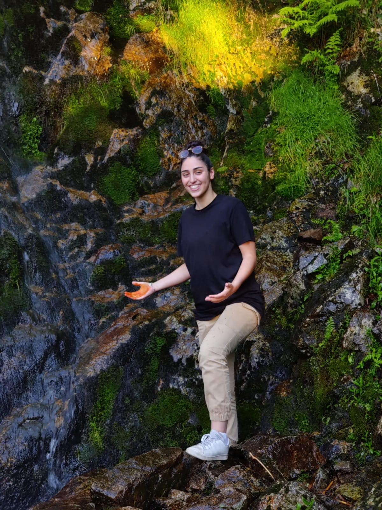

CV Kerroua Loana

Chargée de communication
PROFIL
Diplômée à l'ISEG Lyon, je possède des compétences dans les domaines de la communication et l'événementiel. Sérieuse et disciplinée.
Permis B
Née le 14 octobre 2000
1 route du Colombier 42400
COMPETENCES
Power Point
Excel
Word
Anglais : B1
Allemand : A2
Photoshop
Illustrator
INTERETS
Lecture
Sport
Cuisine